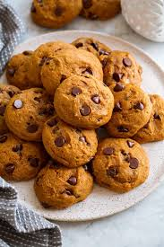

Odin Recipes
Pumpkin Chocolate Chip Cookies

Description
MSweeten your fall with these pumpkin chocolate chip cookies.
Pumpkin Chocolate Chip Cookies ingredient
- Pumpkin
- Sugar
- Oil
- Egg
- Leaveners
- Milk
- Flour
- Cinnamon
- Salt
- Walnuts
- Chocolate
- Vanilla
How to make Pumpkin Chocolate Chip Cookies step by step
- Combine the wet ingredients. Dissolve the baking sode in milk, then stir it in
- Combine the dry ingredients, then stir the mixture into the wet ingredients
- Stir in the walnuts, chocolate, vanilla
- Drop the dough onto cokkie sheets and bake until the cookies are firm